שירותי הנדימן ושיפוצים
כל עבודות התחזוקה והשיפוץ לבית, בידיים של בעל מקצוע אחד שמלווה אתכם מההתחלה ועד הסוף.
עבודות צבע
צביעת פנים וחוץ, חידוש קירות, טיפול בסדקים וקילופים וגימור נקי ומדויק.
גבס ושפכטל
קירות ותקרות גבס, החלקת קירות בשפכטל, תיקוני חורים וסדקים והכנה לצבע.
שיפוצים קטנים
תיקונים ושדרוגים בבית: ריצוף, התקנות, סגירת פינות שדורשות טיפול ועוד.
נגרות חוץ
פרגולות, סככות, גגונים, דקים ועבודות עץ לחצר ולגינה, בנייה חזקה שמחזיקה שנים.
עבודות שיפוצים וצבע: לפני ואחרי
התוצאות מדברות בעד עצמן. ככה נראית עבודה כשעושים אותה כמו שצריך.
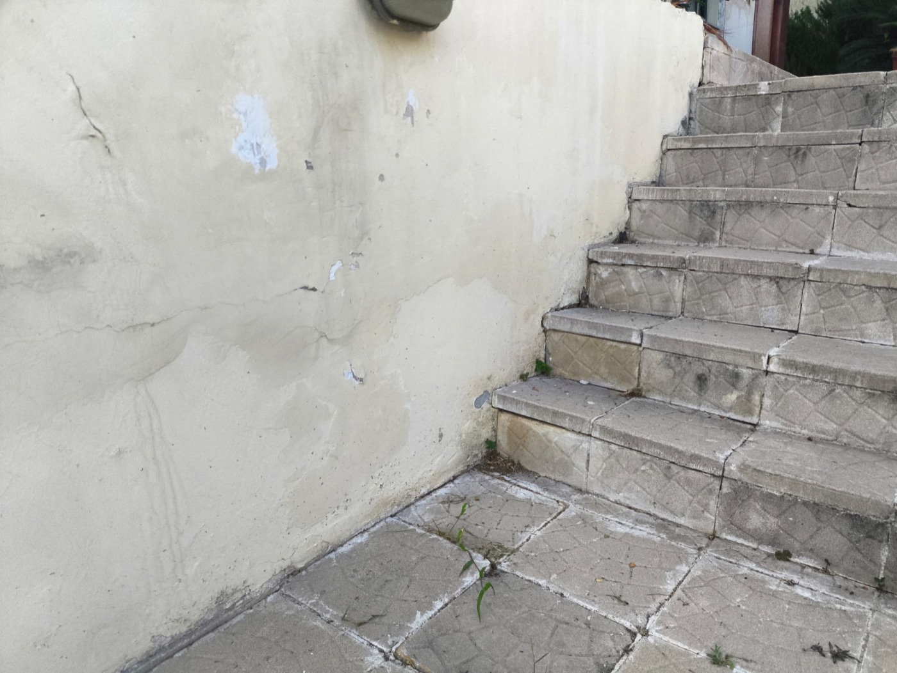
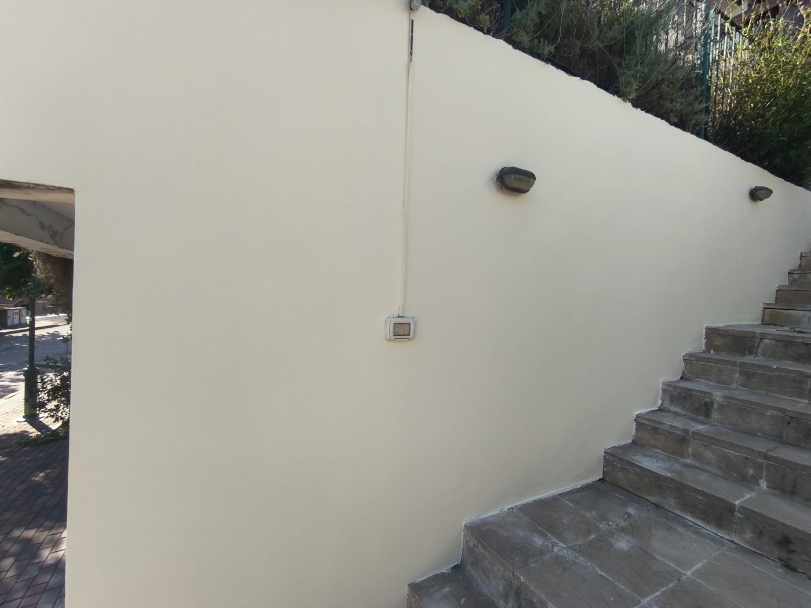
שיקום קיר חיצוני: טיפול בסדקים, שפכטל וצביעה מחדש
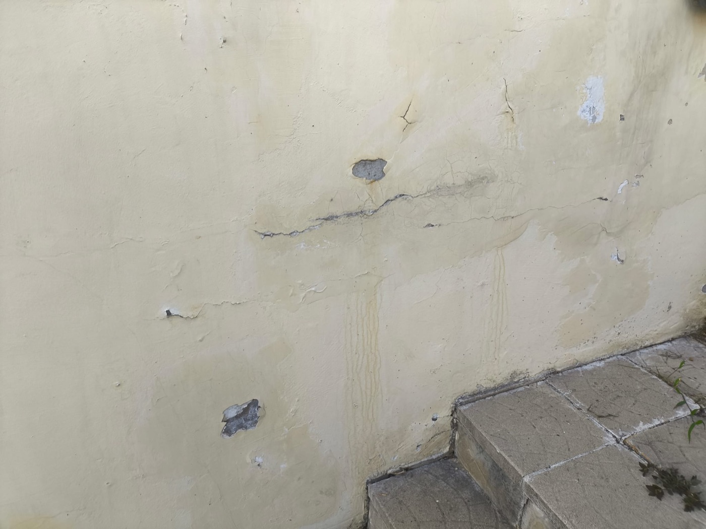
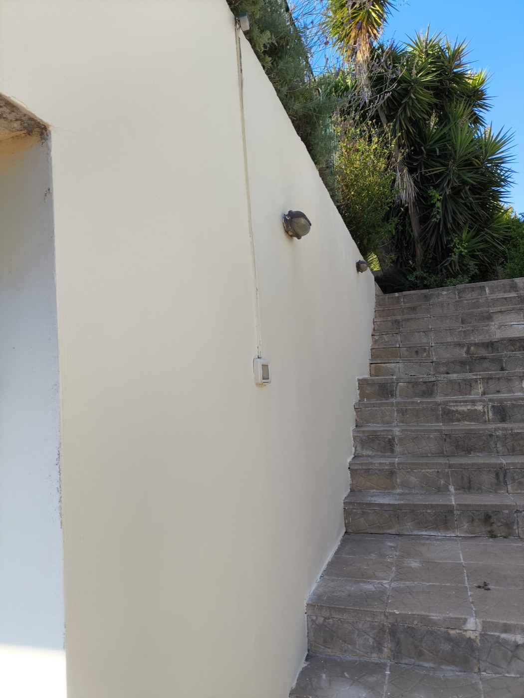
מקיר סדוק ומוכתם לקיר חלק ונקי
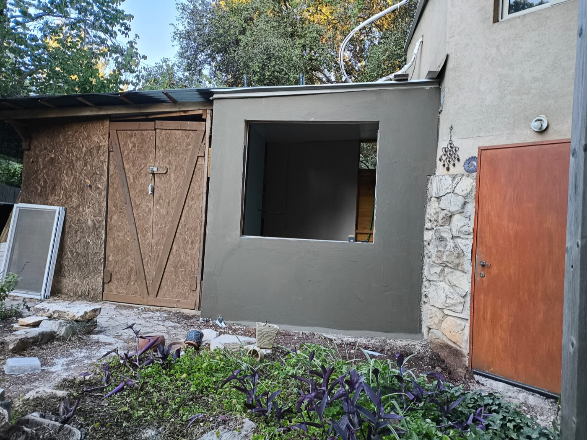
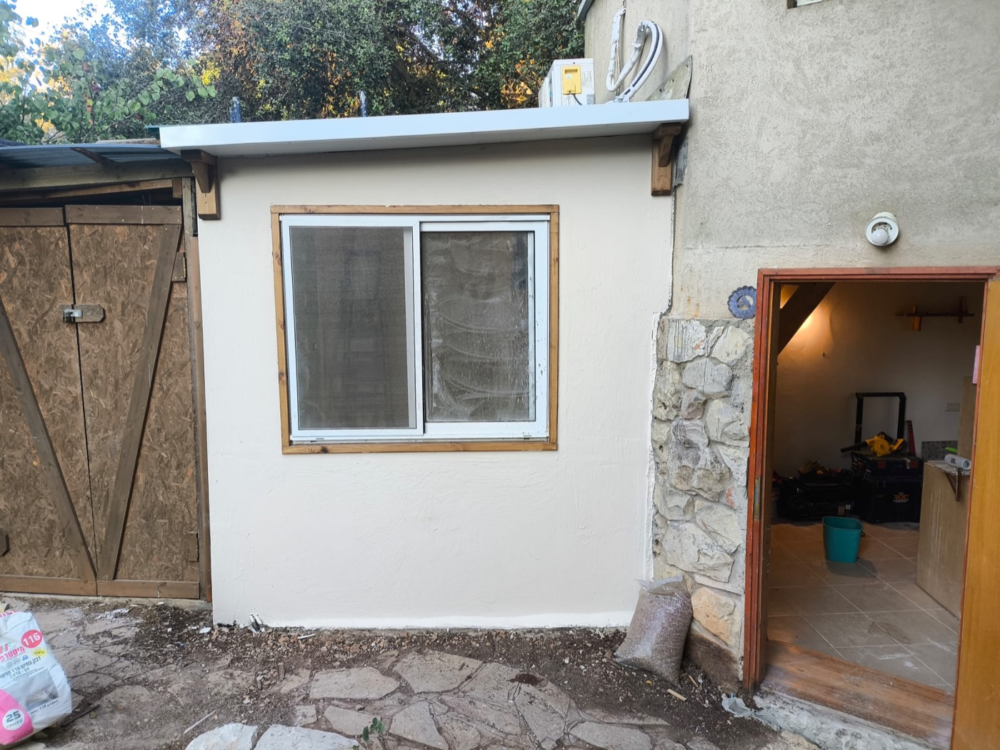
תוספת בנייה: מטיח גולמי ליחידה מוגמרת עם חלון ומסגרות עץ
עבודות גבס, ריצוף ונגרות
הצצה לעבודות נוספות מהשטח: קירות גבס, ריצוף, מטבחים ונגרות חוץ.
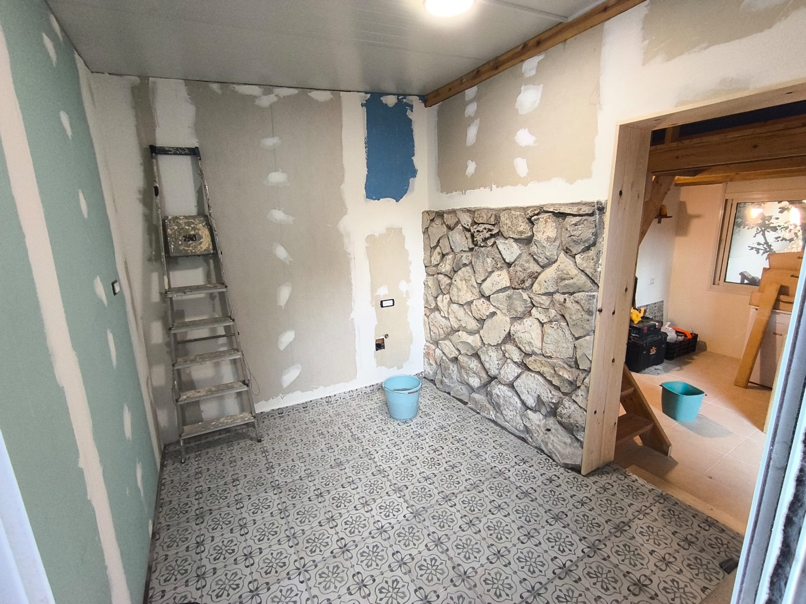
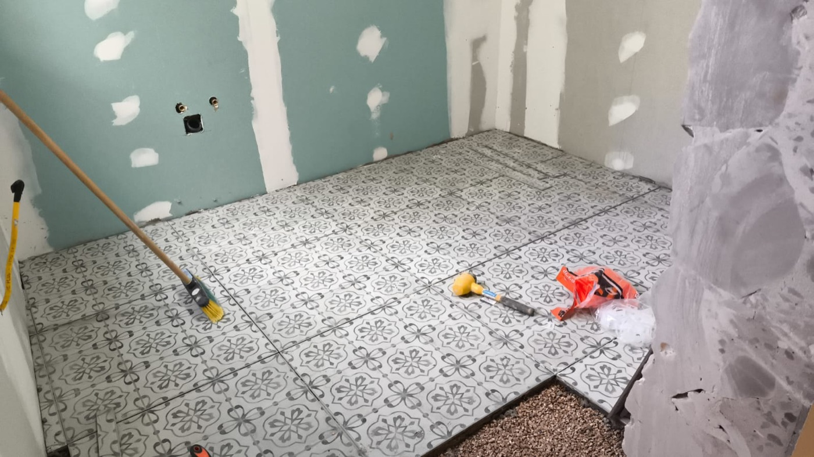
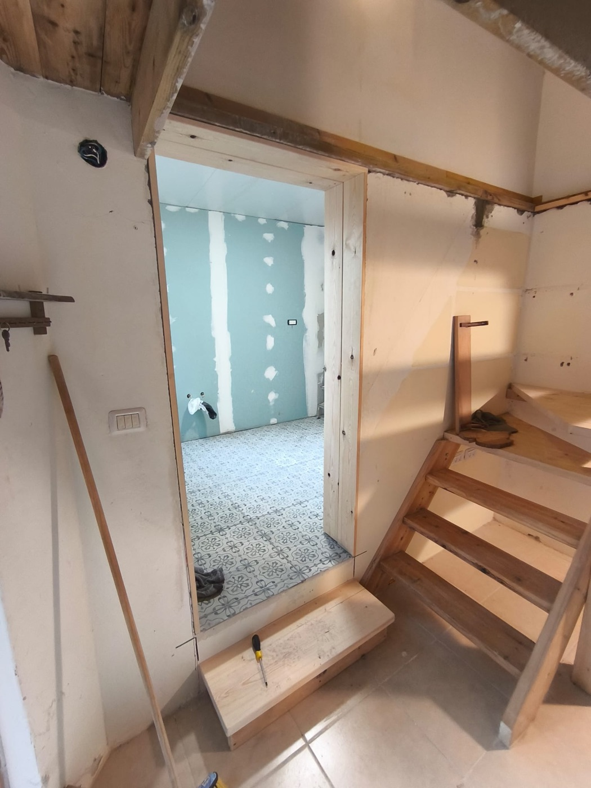
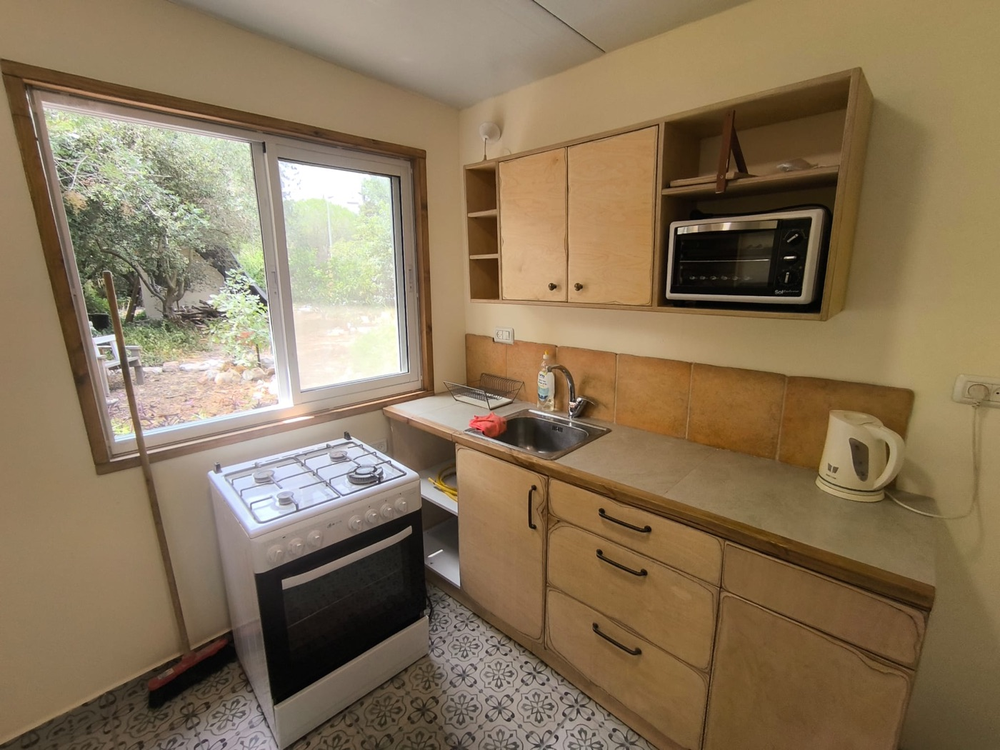
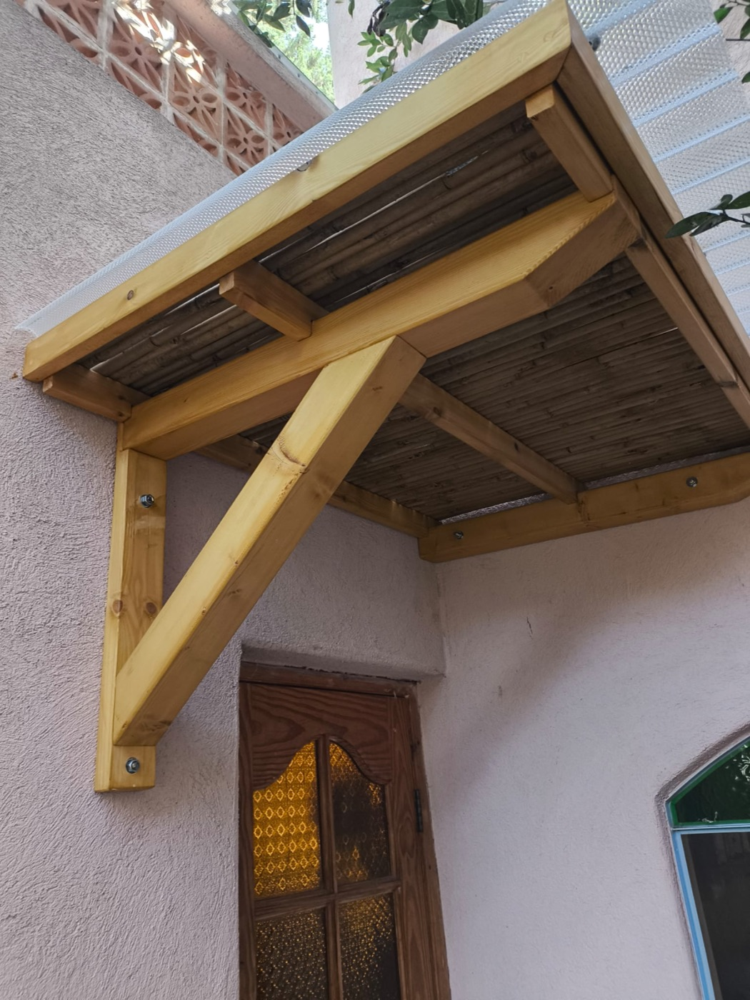
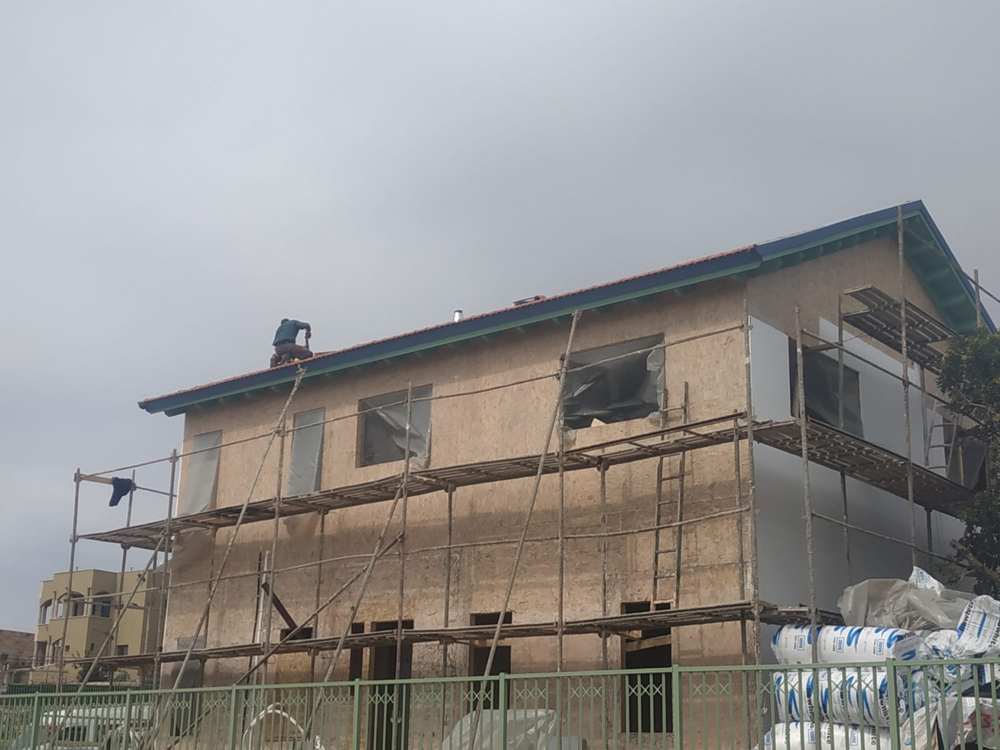
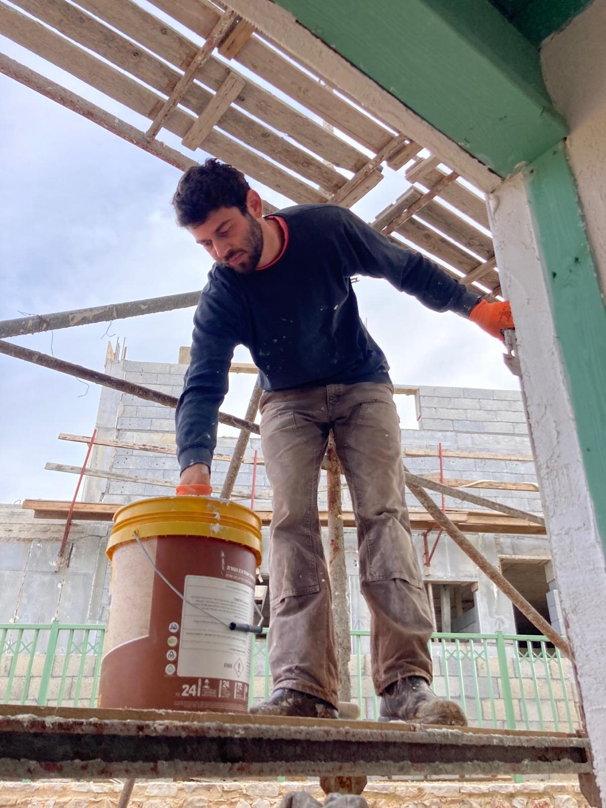
למה לעבוד עם תומר?
אני מאמין שעבודה טובה מתחילה ביחס אישי. אצלי אין קבלני משנה ואין הבטחות באוויר: אני זה שמגיע, אני זה שעובד ואני זה שאחראי על התוצאה.
- בעל מקצוע אחד מההתחלה ועד הסוף, בלי מתווכים
- עבודה נקייה ומסודרת, גם תוך כדי וגם בסיום
- הערכת מחיר הוגנת ושקופה לפני שמתחילים
- זמינות גם לעבודות קטנות שאחרים לא מגיעים אליהן
איך זה עובד?
שלושה שלבים פשוטים ומקבלים הערכת מחיר, בלי התחייבות.
שולחים הודעה
כותבים לי בוואטסאפ מה צריך לתקן, לצבוע או לבנות.
מצרפים תמונה
תמונה של העבודה עוזרת לי להבין בדיוק מה נדרש ולתת הערכה מהירה.
מקבלים הצעת מחיר
אני חוזר אליכם עם הערכת מחיר הוגנת ותיאום מועד שנוח לכם.
שאלות נפוצות
כל מה שחשוב לדעת לפני שמזמינים הנדימן.
אילו עבודות הנדימן עושה?
איך מקבלים הצעת מחיר מהנדימן?
מה ההבדל בין שפכטל לטיח?
האם כדאי לתקן סדקים בקיר חיצוני לפני צביעה?
מה כוללת נגרות חוץ?
יש עבודה בבית שמחכה כבר חודשים?
שלחו לי עכשיו תמונה בוואטסאפ ותקבלו הערכת מחיר, פשוט וללא התחייבות.
תומר בוואטסאפ: 058-448-7718מעדיפים שיחה? 058-448-7718